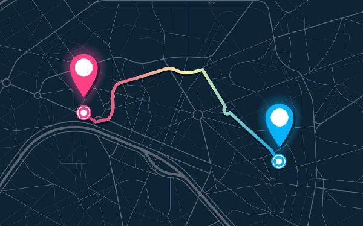

Compléments d'explications : La géolocalisation est une invention majeure qui a de nombreuses applications pour les individus comme pour les entreprises. Cependant elle comporte également un certain nombre de dangers comme le geotracking (le pistage géographique des individus). 